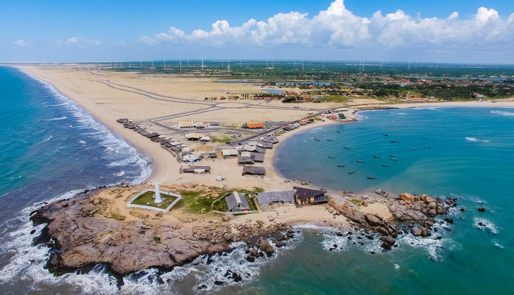

O Piauí é um estado localizado na região Nordeste do Brasil, conhecido por suas paisagens naturais, como o Delta do Parnaíba, e por sua cultura rica, com festas tradicionais e culinária típica. A economia do Piauí é baseada na agricultura, na pecuária e no turismo. Atualmente, o governador do Piauí é Rafael Fonteles, que trabalha para promover o desenvolvimento do estado e melhorar a qualidade de vida dos piauienses.
